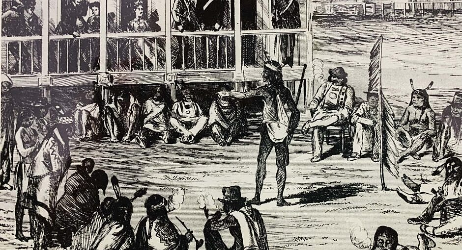

Treaty One was the first treaty to be signed in Canada. It set a precedent for subsequent treaties and established a framework for negotiations between Indigenous peoples and the Crown. The crown verbally promised the indigenous peoples land, agricultural support, education and medical care if they agreed to the terms of the treaty. while all these treaties share the common framework of "cede, yield, and surrender," the oral traditions of the Anishinabe and Muskego Cree signatories of Treaty 1 emphasize that the agreement was intended as a land-sharing pact for "as long as the sun shines," because they believed in sharing land equally with the newcomers.
